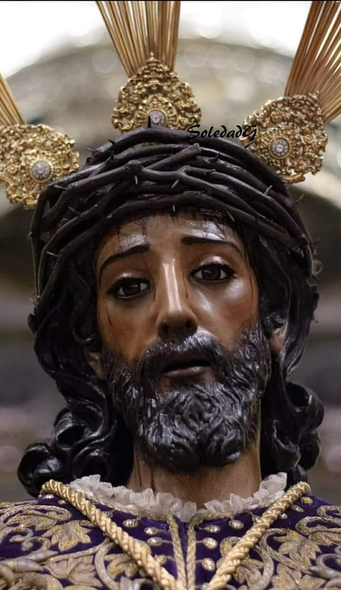
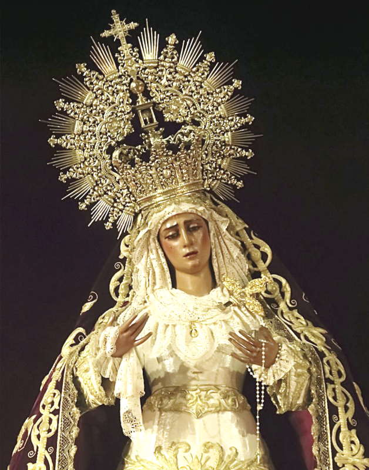
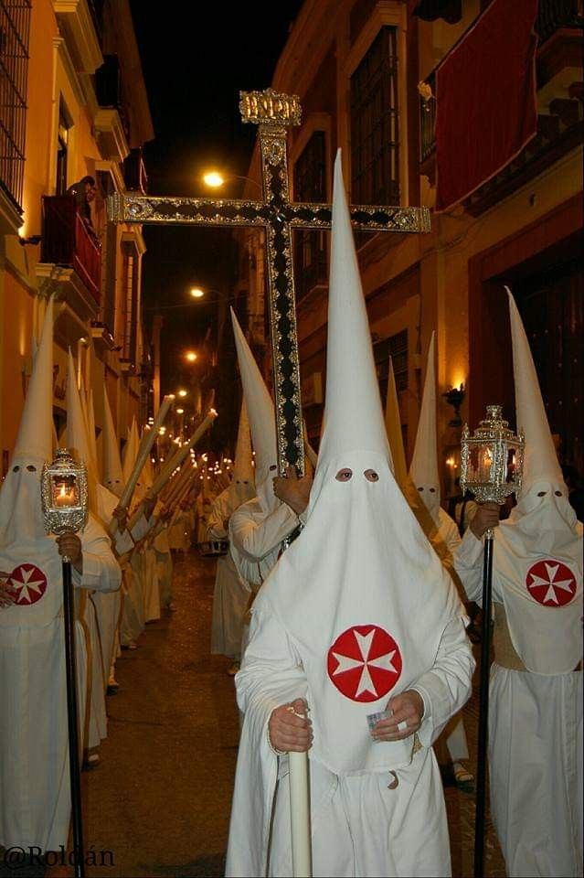
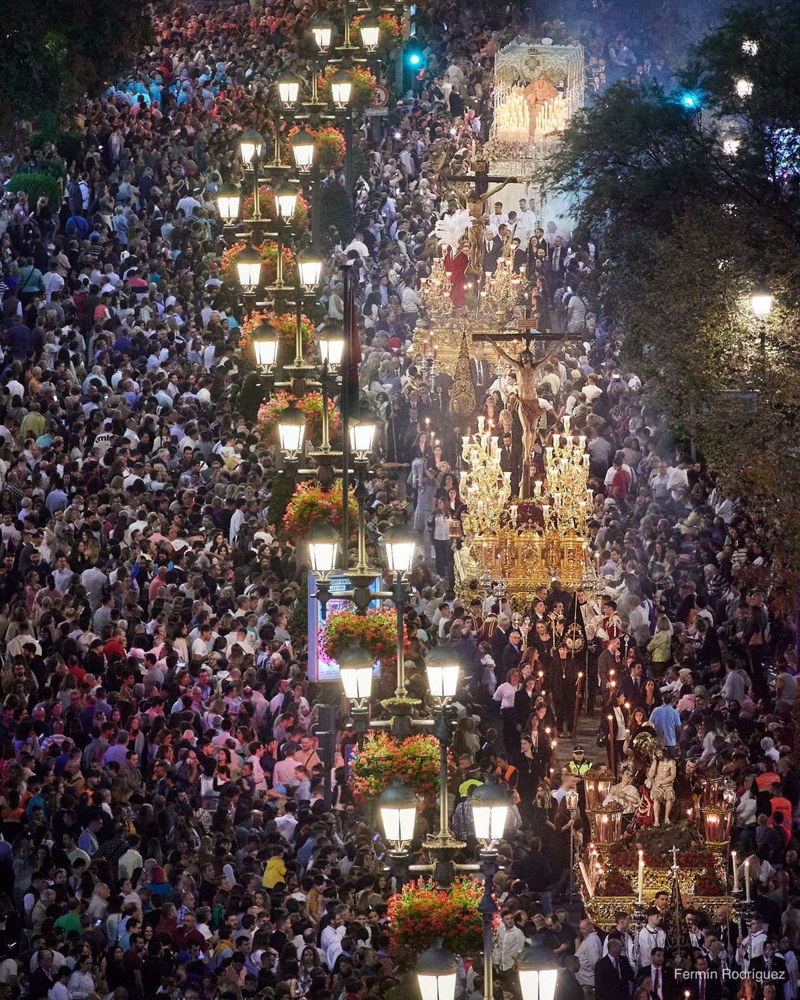

SALA IV
LA MADRUGÁ
Una mirada a los momentos, las emociones y la devoción que convierten la Madrugá de Sevilla en una noche única.

EL MISTERIO DE LA SENTENCIA
El Misterio de la Sentencia, una de las escenas más reconocibles de la Madrugá sevillana, representa uno de los momentos de mayor intensidad de esta noche.

LA VIRGEN DE LAS ANGUSTIAS
La Virgen de las Angustias, símbolo de recogimiento y devoción, acompaña la Madrugá sevillana con la profunda emoción de una noche de fe y silencio.

LOS HERMANOS DE CIRIO
La Madrugá sevillana se convierte en silencio, luz y recogimiento cuando los hermanos de cirio avanzan por las calles acompañando a sus titulares.

ANTE LA FE
Ante una imagen sagrada, el tiempo parece detenerse. Miradas que contemplan, corazones que rezan y un instante de silencio, reflexión y admiración.